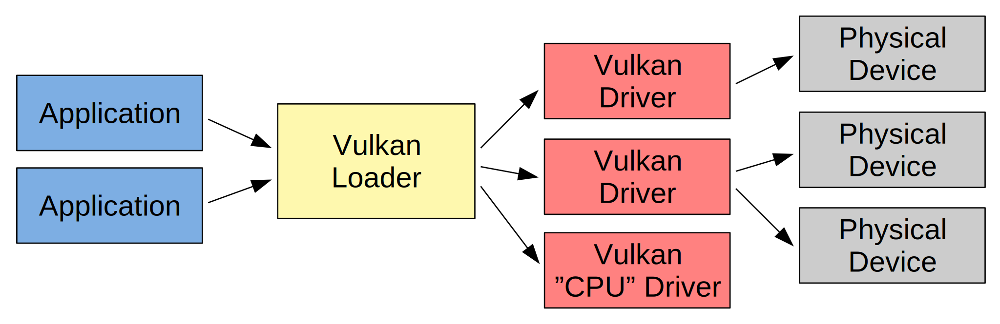
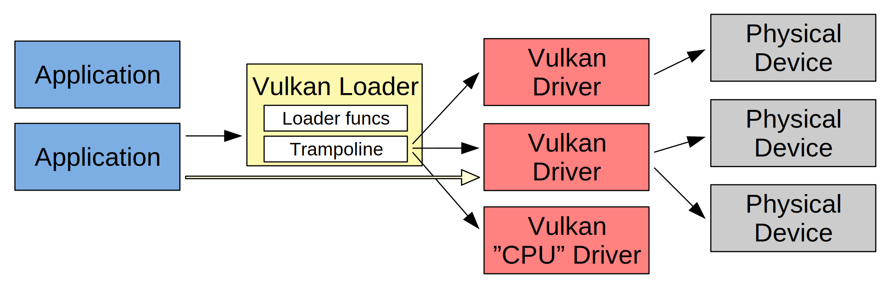

<!DOCTYPE html>
<html lang="en">

<head>
<title>1-5-LogicalDevice</title>
<meta charset="utf-8">
<link rel="stylesheet" href="../common/vulkanStyle.css">
<style media="screen" type="text/css">
</style>
</head>

<body>

<h1>Vulkan Tutorial</h1>

<h3>1-5 - Logical Device</h3>

<p>Logical device is needed for the real work in Vulkan, such as computations or graphics rendering.
In the previous articles we covered Vulkan instance, physical devices, and the ways
in which we can get their properties, features, list of extensions, etc. out of them.
The next step is logical device.</p>

<p>A logical device can be created using the following code:</p>

<pre>
// create device
vk::initDevice(
	pd,  // physicalDevice
	vk::DeviceCreateInfo{  // pCreateInfo
		.flags = 0,
		.queueCreateInfoCount = 1,  // at least one queue is mandatory
		.pQueueCreateInfos = array&lt;vk::DeviceQueueCreateInfo,1>{
			vk::DeviceQueueCreateInfo{
				.flags = 0,
				.queueFamilyIndex = 0,
				.queueCount = 1,
				.pQueuePriorities = &amp;(const float&amp;)1.f,
			}
		}.data(),
		.enabledLayerCount = 0,  // no enabled layers
		.ppEnabledLayerNames = nullptr,
		.enabledExtensionCount = 0,  // no enabled extensions
		.ppEnabledExtensionNames = nullptr,
		.pEnabledFeatures = nullptr,  // no enabled features
	}
);
</pre>

<p>As can be seen, a logical device is created out of physical device.
Additionally, we provide the list of the required queues, list of enabled layers and extensions,
and enabled features.</p>


<h3>Logical and physical devices</h3>

<p>So, why we have logical and physical devices and not just devices?
One reason is that we can combine several physical devices
to create one logical device with increased performance.
Another reason is resource optimizations. We first query for capabilites,
and then create logical device exactly as we need it.
Thus, logical device is not full blown device, but optimized for our needs.
In other words, having logical and physical device separated,
the driver and our application might be more efficient.</p>

<p>We can depict Vulkan architecture in the following way:</p>



<p>Applications are doing their Vulkan calls. These are going through the Vulkan loader.
The loader forwards them to the appropriate Vulkan drivers.
The drivers control physical devices. One driver typically controls one physical device.
If there are more physical devices from the same vendor, often they use the same driver.
There are also drivers that are not directly connected with any physical device.
One example is "CPU" drivers that are doing software rendering.</p>


<h3>Function pointers</h3>

<p>When the call is going through Vulkan loader, it uses trampoline to direct the call to particular Vulkan driver.
The overhead is usually negligible. Anyway, to avoid it or to gain additional flexibility, Vulkan provides
vkGetDeviceProcAddr() function to query function pointer for particular logical device.
Thus, we can directly call the drivers function as shown on the following image by yellow arrow:</p>



<p>We can even print the name of library where particular Vulkan function is implemented.
It is demonstrated in the code of this article:</p>

<pre>
// device function pointers
cout << "Device function pointers for " << properties.deviceName << ":" << endl;
cout << "   vkCreateShaderModule() points to: " << getLibraryOfAddr(vk::getDeviceProcAddr<void*>("vkCreateShaderModule")) << endl;
cout << "   vkQueueSubmit()        points to: " << getLibraryOfAddr(vk::getDeviceProcAddr<void*>("vkQueueSubmit")) << endl;
</pre>

<p>When run, the output similar to the following one should appear:</p>

<pre>
Instance function pointers:
   vkCreateInstance()     points to: /usr/lib/x86_64-linux-gnu/libvulkan.so.1
   vkCreateShaderModule() points to: /usr/lib/x86_64-linux-gnu/libvulkan.so.1
   vkQueueSubmit()        points to: /usr/lib/x86_64-linux-gnu/libvulkan.so.1
Device function pointers:
   Quadro K1000M
      vkCreateShaderModule() points to: /usr/lib/x86_64-linux-gnu/libnvidia-glcore.so.460.73.01
      vkQueueSubmit()        points to: /usr/lib/x86_64-linux-gnu/libGLX_nvidia.so.0
</pre>

<p>This was result from Linux and Nvidia Quadro K1000M. Windows 7 with three different cards is slightly different:</p>

<pre>
Instance function pointers:
   vkCreateInstance()     points to: C:\Windows\system32\vulkan-1.dll
   vkCreateShaderModule() points to: C:\Windows\system32\vulkan-1.dll
   vkQueueSubmit()        points to: C:\Windows\system32\vulkan-1.dll
Device function pointers:
   GeForce GTX 1050
      vkCreateShaderModule() points to: C:\Windows\system32\nvoglv64.dll
      vkQueueSubmit()        points to: C:\Windows\system32\nvoglv64.dll
   Radeon(TM) RX 460 Graphics
      vkCreateShaderModule() points to: C:\Windows\System32\amdvlk64.dll
      vkQueueSubmit()        points to: C:\Windows\System32\amdvlk64.dll
   Intel(R) HD Graphics 530
      vkCreateShaderModule() points to: C:\Windows\system32\igvk64.dll
      vkQueueSubmit()        points to: C:\Windows\system32\igvk64.dll
</pre>

<p>So, Vulkan loader is implemented by libvulkan.so.1 on Linux and vulkan-1.dll on Windows.
The names of the drivers can be seen in the rest of the output.</p>

<!-- Future topics: instance-level functionality, physical-device-level functionality and device-level functionality -->

</body>
</html>
